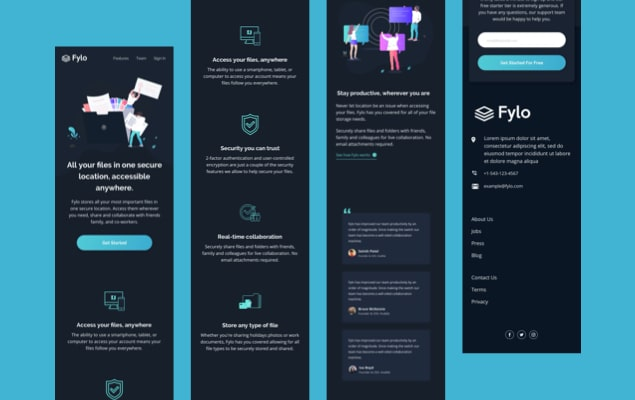
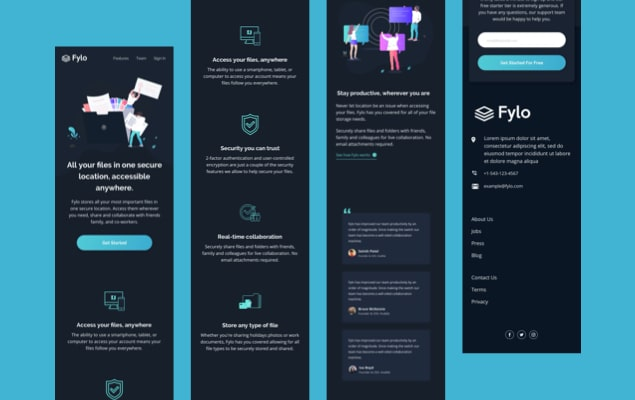

This project was built in pure HTML and CSS. I had mobile and desktop designs to work to and built it so that it was fully-responsive. I took a mobile-first approach and used modern CSS like Flexbox and Grid for layout purposes.
Interaction Design / Front End Development
HTML / CSS / JS
This project was a front-end challenge from Frontend Mentor. It’s a platform that enables you to practice building websites to a design and project brief. Each challenge includes mobile and desktop designs to show how the website should look at different screen sizes. Creating these projects has helped me refine my workflow and solve real-world coding problems. I’ve learned something new with each project, helping me to improve and adapt my style.
 

InsurePrevious Project |
ManageNext Project |